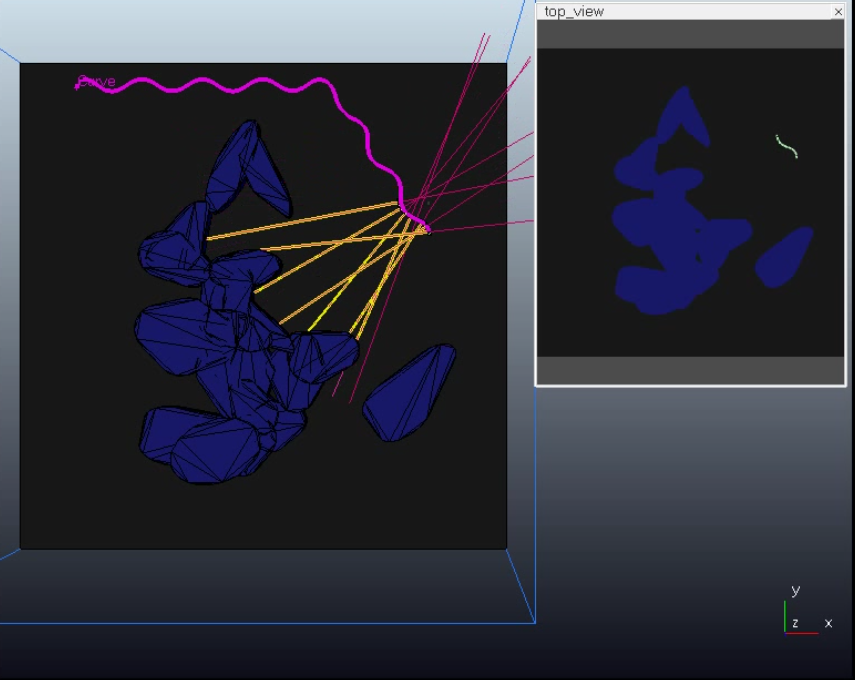
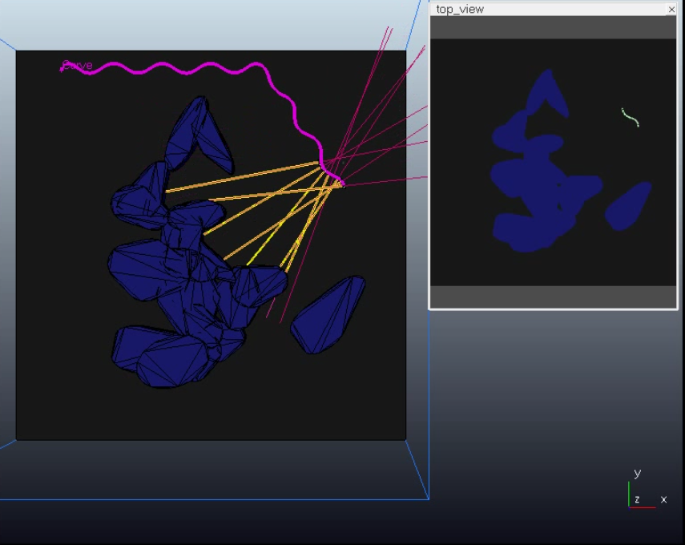
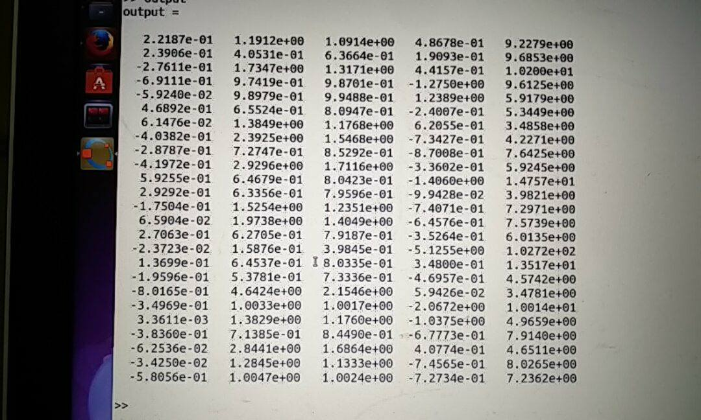

Automated Navigation using Snake-like Robot
Abstract
In this project we devise a predictive model to generate parameters for autonomous motion of a snake-like robot. The robot uses serpentine motion to move across an obstacle field. It is equiped with several sensors that act like the sensitive body of a snake. The predctive model relies on this sensor data obtained from the snake and the data from previous motion. We postulate that this data can be used to train a predictive model to generate the control parameters required for the motion of the snake-like robot.
1. Introduction
A snake-like robot, due to many degrees of freedom, has great mobility and flexibility allowing it to navigate though dense obstacle maps where conventional robots cannot traverse. A further, previously unused advantage is the fact that its oscillatory movement allows the bot to use sensors to map a wide portion of its environment. These features make it an invaluable tool in several applications. Thus we try to focus on using simple but elegant techniques to design an autonmous snake-robot.
1.1 Introduction to Problem
The snake has several types of moving techniques including side-winding, serpentine and rectilinear motion. We focus our work on serpentine motion as it can use obstacles as suppport to move along. The serpentine motion is goverened by a controller that takes in several parameters as input. Given these parameters one can generate a variety of motion from the snake. But these parameters have to be manually tuned for a certain type of motion. Taking inspiration from a real snake, we try to move the snake through an obstacle filled map. This will require the snake to change it's motion depending upon the sensor data from the environment. We proppose that this sensor data along with the knowledge of the previous move can be used to predict the upcoming moves for the robot.
However, the sensor data won't be directly useful for any purpose. The sensor data collected from the proximity sensors will be quite unintelligible to humans and it is not practical to feed this data directly to a serpenoid gait controller for autonomous navigation. We need to add an intermediate functional black-box that would implement machine learning techniques to predict the subsequent control parameters for the robot.
However, the sensor data won't be directly useful for any purpose. The sensor data collected from the proximity sensors will be quite unintelligible to humans and it is not practical to feed this data directly to a serpenoid gait controller for autonomous navigation. We need to add an intermediate functional black-box that would implement machine learning techniques to predict the subsequent control parameters for the robot.
1.2 Figure
Block diagram of the proposed solution.
 |
Simulated snake robot.
 |
1.3 Literature Review
[1] Mohammad Dehghani, M. J. Mahjoob, "A Modified Serpenoid Equation for Snake Robots", Proceedings of the 2008 IEEE International Conference on Robotics and Biomimetics
This paper presents a modified set of serpenoid equations to navigate snake robots more efficiently. Serpentine gait is recognized as the most efficient gait for snakes in terms of energy, motor torques and friction forces. However, the conventional serpentine model is based on fixed parameters. This paper is an extension of the original work done by S. Hirose on deriving a mathematical model for serpentine motion of a snake. It describes some modifications on the existing controller in order to make it easier to adapt on real robots. It has been used as the basis for our simulated snake-robot model.
[5] Yasunobu Hitaka, Masahiro Yokomichi, "Obstacle Avoidance of a Snake Robot in Narrow Hallway", Proceedings of 2012 IEEE International Conference on Mechatronics and Automation, Chengdu, China
In this paper, a simple robot model is proposed that uses serpentine motion to move across an obstacle map. They use a serpenoid curve to approximate the serpentine motion. The control parameters of the curve are manually adjusted to fit the motion of the snake.
[3] Mark Pfeiffer, Michael Schaeuble, Juan Nieto, Roland Siegwart, Cesar Cadena, "From Perception to Decision: A Data-driven Approach to End-to-end Motion Planning for Autonomous Ground Robots", https://arxiv.org/abs/1609.07910v1
This paper describes the use of a CNN based technique to learn obstacle avoidance and motion planning for a simple 2-wheeled robot. It compares several methods used for autonomous navigation and path planning. It also reviews the use auto-encoders and Deep learning techniques to solve the problem of path planning in robots.
[4] Sromona Chatterjee , Timo Nachstedt , Florentin Wörgötter , Minija Tamosiunaite ,Poramate Manoonpong , Yoshihide Enomoto , Ryo Ariizumi and Fumitoshi Matsuno, "Reinforcement Learning Approach to generate Goal-directed Locomotion of a Snake-Like Robot with Screw-Drive Units", Robotics in Alpe-Adria-Danube Region (RAAD), 2014 23rd International Conference
This paper presents a reinforcement learning approach to learn the motion patterns of the snake. It focuses on using the screw and joint angles as control parameters for locomotion. It demostrates a Policy Improvement algorithm to learn the complex motion of a snake. It uses a real robot to demostrate the test results.
[5] Shuichi Fukunaga, Yutaka Nakamurat, Kazuaki Aso and Shin Ishii, "Reinforcement learning for a snake-like robot controlled by a central pattern generator ", Proceedings ofthe 2004 IEEE Conference on Robotics, Automation and Mechatronics Singapore, 2004
This paper develops a reinforcement learning algorithm to acquire a good control rule for a snake robot in dynamic environments. It uses a Central Pattern Generator as the control scheme for the snake robot. It also demonstrates target oriented motion and inlcined plane motion using the porposed approach.
1.4 Proposed Approach
As a dataset is not currently availbale for this project, it has been manually synthesized. To generate a dataset, we need to model autonomous navigation through an obstacle map and collect the sensor data. To accomplish this, we plan to build a simulation of the snake robot and make it maneuver in an obstacle map. (Detailed expanation of the simulation is described later).
The collected data, is in the form-
[sensor1, sensor2, sensor3, ...., sensor17, heading direction]
On this data, we propose to work with three approaches:
1. Finding corrlation between sensor data and heading direction using k-means clustering.
2. Using ARMA model to predict the heading direction by treating it as a time series.
3. Using a deep learing network which has recurrent layers. (We tried applying a simple LSTM in this case)
The collected data, is in the form-
[sensor1, sensor2, sensor3, ...., sensor17, heading direction]
On this data, we propose to work with three approaches:
1. Finding corrlation between sensor data and heading direction using k-means clustering.
2. Using ARMA model to predict the heading direction by treating it as a time series.
3. Using a deep learing network which has recurrent layers. (We tried applying a simple LSTM in this case)
1.5 Report Organization
The report is dividied into following subsections:
1. Proposed Approach: This explains the the simulatation and each proposed method in detail.
2. Dataset Description.
3. Results and Conclusions.
4. Future Scope of Work and Applicability.
1. Proposed Approach: This explains the the simulatation and each proposed method in detail.
2. Dataset Description.
3. Results and Conclusions.
4. Future Scope of Work and Applicability.
2. Proposed Approach
1. Simulation:
The simulation was designed in VREP simulation software. In the environment, five to seven obstacles were generated randomly. The top view of the environment is captured and is passed on to a python script that detects all possible paths from the starting point and the ending points. Now the snake moves on each of the paths collecting sensor data at each time instant as it moves.

Approach 1- K-Means Clustering:
The idea is that there might be certain environmental configurations which can be associated to the sensor value n some rudimentary range. For example, one configuration will be when most sensors to the right of the snake and the one at the head detect obstacles nearby, then the snake will turn left. So for configuration similar to this, snake should perform similarly. So we first cluster the sensor data (without heading direction), then perform statistical analysis on the heading direction of all data points within a point to see whether some corellation exists.
Approach 2- ARMA Model:
One necessary condition of using ARMA process is that there should be some linear corellation between inputs and outputs. We were hoping that such a corellation might be present. But the corellation heatmap shown below suggests very low linear corellation between the two entities. This implies that using an ARMA model would yeild unhelpful results. So we had to discard in the initial stages itself.

Approach 3- LSTM Model:
The dataset was then divided into training and testing set (70:30). We have used a scaled version of the entire dataset to prevent errors during training and to ease evaluation. We ued a scaled model of the dataset. The scaling is explained in the discusiion section. Next weused a single-cell LSTM model to train our data.
The results of the two approaches that were viable are explained in the next section.
The simulation was designed in VREP simulation software. In the environment, five to seven obstacles were generated randomly. The top view of the environment is captured and is passed on to a python script that detects all possible paths from the starting point and the ending points. Now the snake moves on each of the paths collecting sensor data at each time instant as it moves.
Approach 1- K-Means Clustering:
The idea is that there might be certain environmental configurations which can be associated to the sensor value n some rudimentary range. For example, one configuration will be when most sensors to the right of the snake and the one at the head detect obstacles nearby, then the snake will turn left. So for configuration similar to this, snake should perform similarly. So we first cluster the sensor data (without heading direction), then perform statistical analysis on the heading direction of all data points within a point to see whether some corellation exists.
Approach 2- ARMA Model:
One necessary condition of using ARMA process is that there should be some linear corellation between inputs and outputs. We were hoping that such a corellation might be present. But the corellation heatmap shown below suggests very low linear corellation between the two entities. This implies that using an ARMA model would yeild unhelpful results. So we had to discard in the initial stages itself.
Approach 3- LSTM Model:
The dataset was then divided into training and testing set (70:30). We have used a scaled version of the entire dataset to prevent errors during training and to ease evaluation. We ued a scaled model of the dataset. The scaling is explained in the discusiion section. Next weused a single-cell LSTM model to train our data.
The results of the two approaches that were viable are explained in the next section.
3. Experiments & Results
3.1 Dataset Description
As we are approaching the snake-locomotion problem from a very different angel, we did not have any available dataset. Thus, we designed a simulated snake robot on Vrep (simulation software) to create our own data. We used the modified serpentine controller to control the motion of the robot by manualy tuning the paramters. The set has following division of data -
1 head mounted sensor
16 side mounted sensors. 8 on the left and 8 on the right.
Heading direction value for current motion (c-value)
We had 59435 samples for each of the above feature. This data was generated using 45 real-time simulations performed in the snake-robot simulator.
Generating trainig data in the snake-robot simulator 
1 head mounted sensor
16 side mounted sensors. 8 on the left and 8 on the right.
Heading direction value for current motion (c-value)
We had 59435 samples for each of the above feature. This data was generated using 45 real-time simulations performed in the snake-robot simulator.
Generating trainig data in the snake-robot simulator 
3.2 Discussion
Results of K-means:
We performed two clusterings with K as 10 and 25. For both clusterings, we did not observe any significant similarity between the heading directions of all the points in a particular clusters. Here are the images of statistical analysis performed on matlab. As you can observe, means are all very closed to zero. So even though variances of heading direction for most clusters is samall, these clustering models will fail to make sharp turnings.
It is important to note that we modifies the dataset such that the frequency of occurence of values of heading direction was as uniform as possible so as to not have a skewed dataset.
Results of LSTM:
The dataset was then divided into training and testing set (70:30). We have used a scaled version of the entire dataset to prevent errors during training and to ease evaluation. The scaling was done as follows -
Sensor values (0,10) --> (0,1)
Heading direction (c-value) (-5,5) --> (-1,1)
We have used a single-cell LSTM model to train our data. The training results are -
Trainig Loss: 0.0019
Testing Loss: 0.0025
The results suggest that the model has behaved pretty well for this problem.
We performed two clusterings with K as 10 and 25. For both clusterings, we did not observe any significant similarity between the heading directions of all the points in a particular clusters. Here are the images of statistical analysis performed on matlab. As you can observe, means are all very closed to zero. So even though variances of heading direction for most clusters is samall, these clustering models will fail to make sharp turnings.
It is important to note that we modifies the dataset such that the frequency of occurence of values of heading direction was as uniform as possible so as to not have a skewed dataset.
|  |
 |
Results of LSTM:
The dataset was then divided into training and testing set (70:30). We have used a scaled version of the entire dataset to prevent errors during training and to ease evaluation. The scaling was done as follows -
Sensor values (0,10) --> (0,1)
Heading direction (c-value) (-5,5) --> (-1,1)
We have used a single-cell LSTM model to train our data. The training results are -
Trainig Loss: 0.0019
Testing Loss: 0.0025
The results suggest that the model has behaved pretty well for this problem.
4. Conclusions
4.1 Summary
In this work we presented a data-driven approach towards solving a navigation problem for a redundant system. We have successfully shown that it is possible to learn a control strategy by using the surrounding environment as an input. The LSTM based model is able to learn a navigation strategy and use it as control parameter of the serpentine controller.
4.2 Future Extensions
We have observed that even though the model has shown greart predtion accuracy on the test data, it is not able to provide a proper navigation strategy for the simulated snake-robot. Thus. we aim to work further on this problem to correct the robot behaviour and incorporate goal-directed locomotion into the snake-robot.